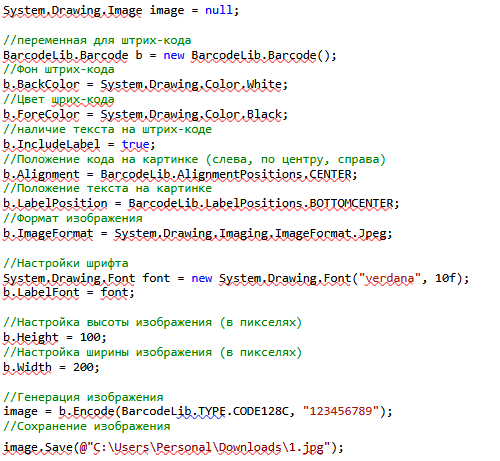

Загрузка из регистра сведений
&НаКлиенте Процедура ВидКурсаПриИзменении(Элемент) Ценфыва = 0; Ценфыва = ПолучитьЦену(Объект.ВидКурса, Объект.Курс); Объект.ЦенаКурса = Ценфыва; КонецПроцедуры &НаСервере Функция ПолучитьЦену(ТекВидКурса, ТекКурс) Запрос = Новый Запрос; Запрос.Текст = "ВЫБРАТЬ | ЦенаКурсов.Цена |ИЗ | РегистрСведений.ЦенаКурсов КАК ЦенаКурсов |ГДЕ | ЦенаКурсов.Курс = &Курс И | ЦенаКурсов.ВидКурса = &ВидКурса"; Запрос.УстановитьПараметр("Курс", ТекКурс); Запрос.УстановитьПараметр("ВидКурса", ТекВидКурса); Записи = Запрос.Выполнить().Выбрать(); Если Записи.Следующий() Тогда Возврат Записи.Цена; Иначе Возврат 0; КонецЕсли; КонецФункции;
Заполнение строки табл части
Рассчет суммы
штрихкод
скачать на всякий Barcode
для сохранения штрих кода на всех компах:
string desktopPath = Environment.GetFolderPath(Environment.SpecialFolder.Desktop);
string fileName = "image.png";
string fullPath = Path.Combine(desktopPath, fileName);